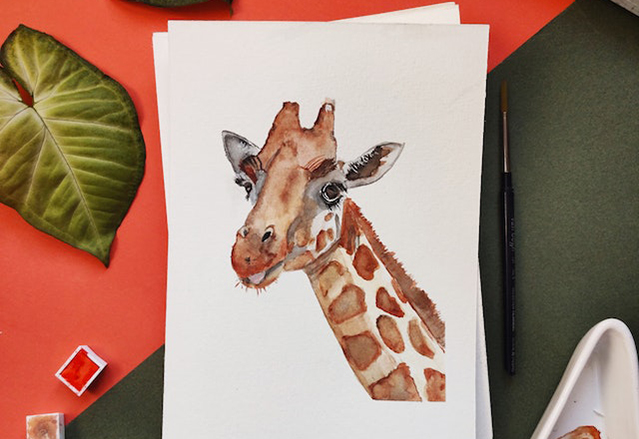

About Us
Our Work
Contact Us
More Info
arrow_forward
My Logo
Photo by Alex Blokstra -- www.pexels.com
Project 1

Project 2
Project 3
×
 Photo by Alex Blokstra -- www.pexels.com
Photo by Alex Blokstra -- www.pexels.com
Photo by Alex Blokstra -- www.pexels.com
Photo by Alex Blokstra -- www.pexels.com